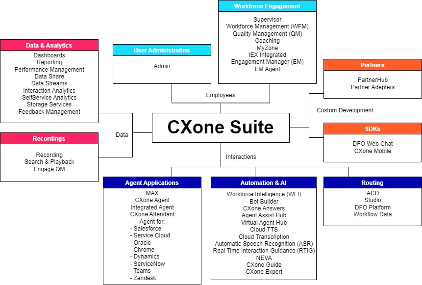
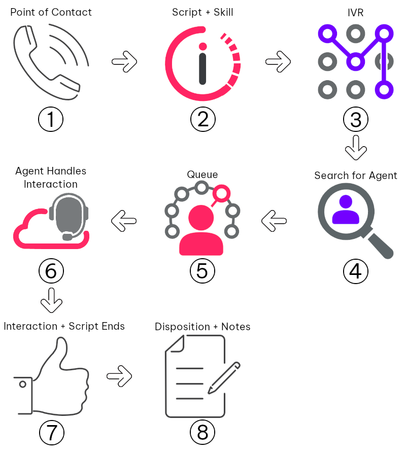

This page provides a high-level overview of CXone. It introduces important concepts like contacts and queues, lists the different components of CXone, and helps you understand the basics of how CXone works and how you can integrate with it.
CXone Overview
CXone is a CCaaS Stands for "Contact Center as a Service". Its primary design is to facilitate customer service options for businesses, particularly by routing inbound contacts to call center agents. software suite. The name "CXone" stands for "one customer experience". It lets you control your entire customer journey with one suite of apps working together as a platform. This includes entry points for customers to contact your business, serving customers with live agents or AI, workforce management (WFM) tools to run your contact center, and more. You can also use data-oriented services like reporting tools or follow-up customer surveys. Depending on your organization's needs, you could use the entire suite, or only specific apps or features of the suite.
Stands for "Contact Center as a Service". Its primary design is to facilitate customer service options for businesses, particularly by routing inbound contacts to call center agents. software suite. The name "CXone" stands for "one customer experience". It lets you control your entire customer journey with one suite of apps working together as a platform. This includes entry points for customers to contact your business, serving customers with live agents or AI, workforce management (WFM) tools to run your contact center, and more. You can also use data-oriented services like reporting tools or follow-up customer surveys. Depending on your organization's needs, you could use the entire suite, or only specific apps or features of the suite.
The core CXone platform is a set of "apps". You can access these apps from the selector in the top-left of the CXone interface. Key platform apps are:
- ACD: Manages routing features and settings like skills
 Categories that determine where contacts route in your system. You assign skills to agents based on their abilities and which types of contacts they can handle. and points of contact The entry point that an inbound contact uses to initiate an interaction, such as a phone number or email address..
Categories that determine where contacts route in your system. You assign skills to agents based on their abilities and which types of contacts they can handle. and points of contact The entry point that an inbound contact uses to initiate an interaction, such as a phone number or email address.. - Admin: Manages CXone users, permissions, access keys, and so forth.
- Studio: The "engine" that makes CXone work (in combination with the ACD). It lets you build scripts that control your system routing and create custom functionality. For example, from a Studio script, you can pull a customer record from a CRM Third-party systems that manage such things as contacts, sales information, support details, and case histories. and display the details to an agent. You can also integrate third-party bots like Omilia. Studio is a separate application that you must download and install on your computer. It is part of the CXone suite, but runs locally on your machine instead of in a browser like the other CXone apps. You can read more about Studio in the online help
 or the Studio for Engineers page.
or the Studio for Engineers page. - CXone Agent: The primary native agent client for CXone. It's the app agents use to interact with contacts. Agents accept interactions, speak or send messages, take notes, and so forth. You can also customize the interface to display useful information to the agent. It was built with the common core framework (CCF) SDK. You can also use this SDK to build or customize your own agent client, integrate into CRMs, and so forth.
The entire CXone suite also includes other apps outside of the core platform. For example, you can integrate the CXone agent client into CRMs like Salesforce or Zendesk. You can also integrate external bots and AI into CXone.
In the following diagram, the heading indicates the purpose or category of the app. Under the heading is a list of each app (or product). Below the diagram is a list of each app and a short description. Each app links to the correlating product documentation in the online help.

User Administration:
- Admin
: Manage employees, groups, schedules, and WEM skills. You can also manage other administrative features like business data and recording policies.
Workforce Engagement:
- Supervisor
: Monitor and interact with agents and view their performance in real time.
- Workforce Management (WFM)
: Manage and forecast employee schedules and shifts.
- Quality Management (QM)
: Monitor and improve agent performance with evaluation forms and plans.
- Coaching: Uses parameters and a rules engine to analyze agent performance and create coaching sessions.
- MyZone
: Lets agents review evaluations, perform self-assessments, and view coaching packages.
- IEX WFM Integrated: Another WFM option that integrates with CXone.
- Engagement Manager (EM) + EM Agent
: A scheduling tool with a mobile application that works with WFM or IEX WFM.
Routing:
- ACD
: Manage everything for your channels, like skills Categories that determine where contacts route in your system. You assign skills to agents based on their abilities and which types of contacts they can handle., dispositions Result that the agent or system assigns to the contact when the interaction ends., and points of contact The entry point that an inbound contact uses to initiate an interaction, such as a phone number or email address..
- Studio
: A scripting tool to configure your routing. Allows you to create an IVR Automated phone menu that allows callers to interact through voice commands, key inputs, or both, to obtain information, route an inbound voice call, or both., implement features like bots Virtual agent designed to handle specific interactions and ASR Allows contacts to respond to recorded voice prompts by speaking, pressing keys on their phone, or a combination of both., and so forth.
- DX Platform: An administrative app to specifically manage digital Any non-voice channel, contact, or skill such as email, chat, messaging, work item, or SMS. channels like WhatsApp or Twitter.
Agent Applications:
- CXone Agent: A modernized native CXone agent application, which is better equipped to handle all types of channels.
- MAX: The native CXone agent application.
- CXone Agent Integrated: A browser extension application that allows you to interact with contacts through both digital and traditional channels.
- CXone Attendant
: a tool to manage your Out of Office scenarios for your phone system. Allows agents to set up features like call forwarding and voicemail.
- Agent for Salesforce: A CXone agent application integrated into Salesforce.
- Agent for Service Cloud Voice: A CXone agent application integrated into the Salesforce Service Cloud.
- Agent for Oracle Service Cloud: A CXone agent application integrated into the Oracle Service Cloud.
- Agent for Chromium Browsers
: A CXone agent application as an extension in Chromium browsers.
- CXone Agent Embedded
: A native agent application for use with CXone, which is embedded into a CRM. It's available for Microsoft Dynamics, ServiceNow, and Zendesk.
- Agent for Teams: A CXone agent application integrated into Microsoft Teams.
Automation and AI:
- Workforce Intelligence (WFI)
: CXone performs a unique action when a certain condition is met, such as sending emails to external contacts or to specified teams.
- Bot Builder
: Create and deploy your own chat bots without programming expertise.
- Agent Assist Hub
: A central place to manage agent assist apps like Google Contact Center AI and Real-Time Interaction Guidance.
- Virtual Agent Hub: Manage all of the virtual agent bots A software application that handles customer interactions in place of a live human agent. that you use with CXone.
- Cloud TTS: Converts text into a spoken output delivered by synthesized voices.
- Cloud Transcription
: A real-time transcription service that converts speech into text for use by virtaul agents, agent assistants, and other self-service apps.
- Automatic Speech Recognition (ASR): Allows contacts to respond to IVR prompts by speaking words or phrases.
- Real-Time Interaction Guidance (RTIG)
: When handling contacts, RTIG provides real-time coaching.
- NEVA Discover: An AI analytics tool that analyzes how you can streamline repetitive actions like mouse clicks or keyboard actions, improving efficiency.
- CXone Guide
: Delivers to contacts the right help at the right time, which may be knowledge articles, bots, or chat with live agents.
- CXone Expert: A knowledge management tool that provides contacts or employees appropriate knowledge articles at the right time.
Data and Analytics:
- Dashboards: A canvas upon which you can add reporting widgets, providing insight into performance of your system, agents, and so forth.
- Reporting: Provides all types of reports about employee performance, diagnostics, and generally how your contact center is functioning.
- Performance Management
: Provides data on agent performance, plus employee engagement features like Gamification.
- Data Share: Lets you pull your CXone contact center data from the data lake for your own reporting purposes
- Data Streams: Allows you to enrich IVR logs and other event data. You can then use your own data-analysis tools, business-intelligence tools, machine learning models, and applications to process the data.
- Interaction Analytics: An intelligent linguistic analytics application that converts contact center interactions into easily-understood data.
- Self-Service Analytics: Understand how your customers interact with your non-assisted, self-service channels, and to identify why they aren't able to self-serve in the CXone IVR.
- Cloud Storage Services: Allows you to keep and access files in cloud storage provided by CXone Mpower.
- Feedback Management
: An industry-leading Net Promoter Score (NPS) technology that offers surveys and evaluates feedback.
Recordings:
- Recording: Native options to record audio and screen.
- Search & Playback: Search for recordings of interactions and play back the recording.
- Engage QM Integrated: provides omnichannel interaction recording.
Partners:
- PartnerHub: A central location for partner applications (Log Reader, POC Provisioning, Self-Service Port Management, and Voice Quality Metrics).
- Partner Adapters: Sync directories and agent states between ACD and partner applications.
SDKs:
- DFO Web Chat: Allows you to build your own chat application that uses CXone digital infrastructure.
- CXone Mobile SDK: Allows you to integrate CXone into your enterprise mobile phone apps.
Terminology
The table in the following drop-down provides a list of key terms or concepts used in the industry or that are specific to the functionality of CXone.
| Term | Details |
|---|---|
| ACD |
An acronym for Automatic Call Distribution. This is the system that recognizes, routes, and connects contacts with available agents based on skill and priority. The ACD application lets you configure a variety of routing features and settings of CXone, such as skills, points of contact, quick replies, do not call lists, and so forth. |
| Tenant or Business Unit |
A tenant is a high-level organizational grouping used to manage technical support, billing, and global settings for your CXone environment. Each customer and partner of NiCE has their own CXone tenant. Depending on the size of your organization or partnership with NiCE, you may have multiple tenants. "Business unit" is sometimes used interchangeably with "tenant". A business unit (BU) is a specific CXone instance or system. For example, a global organization may have different BUs for different regions around the world. |
| Channel | The method or medium through which contacts communicate with your system. You can set up standard channels for phone calls, emails, and so forth. You can also set up digital messaging channels like Facebook, WhatsApp, or Slack. |
| Contact |
The term contact represents two important concepts in CXone:
CXone is built around how a contact "flows" through the system. The contact—or customer—enters the system through a point of contact Tigger Tigerson has a question about his order, so he calls Classics, Inc. In CXone, Tigger is an inbound contact, because he called into the company as a customer. His call enters the system as a contact entity with the master ID and contact ID 8675309. As Tigger navigates the IVR See Anatomy of a Contact for more information. |
| Legs |
A "leg" is a segment of an interaction, often used generally as "call leg". As a contact interacts and maneuvers around your system, it can enter different states or types of states. For example, an inbound voice contact might first interact with your IVR menu, then connect with an agent, then get transferred to another department, and so forth. In this example, when the ACD is connected to the agent while the agent is talking to a contact, that is called the "agent leg". Call legs may have unique contact IDs. Contact IDs refer to a specific context of the contact's lifecycle. Any time you want to refer to a contact, particularly within a specific context or specific call leg, use the contact ID. For example, you can generate reporting metrics for different call legs, or provide a contact an estimated wait time before an agent will be available. |
| IVR | An automated phone menu that lets contacts interact with your system through voice commands and key inputs. This lets the contact provide information to the system or route to an agent or bot as an inbound voice contact. |
| Point of Contact (POC) | An entry point that an inbound contact uses to initiate an interaction, such as a phone number or email address. The POC works with both ACD skills and Studio scripts to route contacts in the way you want them to be handled. |
| Skill |
Categories that determine where contacts route in your CXone system. Skills are assigned to agents, allowing the agent to only handle contacts that they are capable of handling. Skills help keep your routing efficient and organized, and help your contacts find the appropriate service as easily as possible. For example, you could create a point of contact with a phone number for technical support. If you created a technical support skill, when contacts call this number, they would enter your system under this skill and be routed directly to a technical support representative. Similarly, if contacts enter your system in other ways, like the sales department, the contact could also be transferred to technical support through the tech support skill. |
| Script |
The primary purpose of a script is to determine contact routing—directing contacts to their desired agent. Scripts also let you set up custom functionality in your system, such as:
Scripts also let you add your own custom code. CXone has some system scripts which you cannot access or edit. You can create as many of your own scripts as you'd like. You build scripts in Studio. For more information, you can read the product documentation for Studio |
| Campaign | A grouping of skills used to run reports. This helps you organize data for interaction types. For example, you could create a campaign for an upcoming holiday for a unique type of sale. Then, you could run reports to view sales data and other information. |
| Queue |
If a contact requests an agent, they wait in a queue until an agent becomes available. Because each contact is categorized under a skill, they wait in the queue for that skill. When an agent becomes available who is assigned the same skill, the ACD routes the contact to that agent. You can access reporting metrics about queues, like average wait time. Agents also have a personal queue. Contacts can get placed in a personal queue when:
|
| Disposition |
A way to categorize interactions based on their result. At the end of an interaction, the agent can select which one is most pertinent in describing the interaction. For example, you can create two dispositions for a specific campaign, letting your agents specify that the interaction resulted in a successful pre-sale order or not. You can require agents to always add a disposition after an interaction, or it can be optional. This is configured in each skill's settings. CXone comes with default dispositions. You can also create custom dispositions. |
| Agent Client | Usually referred to as an "Agent". This is the application your agents use to handle interactions. The interface is where agents accept contacts, send messages, add dispositions, and so forth. This interface is also where you can display custom screen pops. For example, you may want to display a CRM record for a customer. You could also display real-time interaction guidance (RTIG), which gives suggestions to help the agent handle a contact. |
| Agent Status / Unavailable Codes | Agents can enter different types of working states. They could be available, meaning the system can route contacts to the agent; they could be unavailable for a lunch break or training; they could be busy and actively handling a contact or finalizing their after call work |
System Routing
The basic purpose of CXone is to connect contacts with agents. On top of this, you can build many customizations, but the core routing still involves the same parts like skills Categories that determine where contacts route in your system. You assign skills to agents based on their abilities and which types of contacts they can handle. and contacts
Categories that determine where contacts route in your system. You assign skills to agents based on their abilities and which types of contacts they can handle. and contacts The external or end user who is interacting with your system. This could be your customer, a prospect, or other type of person. Synonym: caller.. The following diagram shows a basic example of system routing. A contact calls a customer service number, gets routed to an agent, interacts with the agent, then exits the system. The table in the drop-down underneath highlights key components that impact routing. Most of the components shown here are set up in the ACD application like the point of contact
The external or end user who is interacting with your system. This could be your customer, a prospect, or other type of person. Synonym: caller.. The following diagram shows a basic example of system routing. A contact calls a customer service number, gets routed to an agent, interacts with the agent, then exits the system. The table in the drop-down underneath highlights key components that impact routing. Most of the components shown here are set up in the ACD application like the point of contact The entry point that an inbound contact uses to initiate an interaction, such as a phone number or email address. and skill. Studio is where you build the script and IVR functionality.
The entry point that an inbound contact uses to initiate an interaction, such as a phone number or email address. and skill. Studio is where you build the script and IVR functionality.

| Stage of Routing | Description |
|---|---|
| 1 | The contact calls a customer service number. That phone number is attached to a "point of contact" (POC) in your CXone system. You must create points of contact for each entry point you want to offer to contacts, like email addresses, chat URLs, or phone numbers. You can also create digital points of contact. Digital points of contact are for digital channels like Facebook Messenger, WhatsApp, Slack, and so forth. |
| 2 | Each POC is assigned a default Studio script and skill. When the contact enters the system, it begins routing with this default script and is also assigned the default skill. You can customize this Studio script to be as simple or complex as you'd like. For example, the contact could route directly to a chat bot. It could also offer alternative languages, quick actions like paying a bill, and so forth. |
| 3 |
In this example shown in the diagram, the Studio script plays an IVR, which lets the contact use their voice or their phone's keypad to navigate. The contact can say an account number, their desired department they want to speak with, and so forth. With certain integrations, contacts can even use their voice as their password with voice biometrics. Classic examples of are:
Throughout the IVR, you can capture data from the contact like their identifying information. This is commonly used to pull details out of a customer relationship management (CRM) tool like Salesforce. After capturing this data, you could customize your script to look up the contact's data in your CRM, then display the data to an agent. |
| 4 & 5 |
After interacting with the IVR, the contact requests to speak with an agent. Depending on the contact's selection, CXone may assign them a new skill. For example, you could create a skill specifically for technical support. If a contact chooses to speak with a tech support agent, your script could assign the contact to that tech support skill and place the contact in the skills' queue. A queue is where the contact waits while the system searches for an agent to handle the contact. This process is handled by the REQAGENT action in Studio. CXone searches for an available agent who is assigned the skill specified in this action. Once the contact reaches this action in the script and the script fires, the contact sits in the associated skill queue. For each skill assigned to an agent, the agent has a proficiency score that is managed by their administrator or manager. When the ACD is searching for available agents, it offers a contact to the available agent with the best proficiency rating. If that agent does not accept the contact, the ACD cycles through agents with a lower proficiency score until someone accepts the contact. While the contact is waiting, depending on the channel, you can customize the contact's experience. Common customizations are playing on-hold music for phone calls or displaying a type of loading or searching indicator for text-based interactions. The Agent client interface is where the system displays a notification, allowing the agent to accept the new contact. Once the agent accepts the new contact, the OnAnswer event fires, which you can customize with the OnAnswer action in the Studio script. If an agent does not answer a contact when offered, it's considered a refusal. You can set refusal timeouts for each user or for a station. You can also report on refusal timeouts (refusal reasons) and see a cause code, which may explain why the agent did not accept the contact. |
| 6 | The agent interacts with the contact. During the interaction, you can display a variety of different screen pops |
| 7 | The agent ends the interaction and the script ends. Depending on your customizations, this may be the last stage of the interaction. If you add post-contact work |
| 8 | If you configured post-contact work, the agent is required to apply a disposition. The agent can also take notes, apply tags, schedule follow-up commitments, and so forth. The contact stays active until the agent adds a disposition. |
CXone Architecture
The various CXone apps are microservices. They work together via API. The APIs available for public consumption are documented on this developer portal. You can use these APIs to interact with your organization's CXone system. You can also use several SDKs as well.
Everything in CXone is based around a "contact". Generally, a contact is the end user or customer, so a contact center agent interacts with contacts; contacts call into contact centers or reach out through social media posts.
Integration Touch Points—Where do integrators come into the picture?
CXone provides many APIs that are documented on this site. You can use these APIs to build your integration and use CXone services. In addition to using the APIs, your organization must have a CXone environment with at least the Studio, ACD, and Admin applications. These apps allow you to set up the necessary user permissions, routing features, and use the CXone "engine". To start building an integration, follow the getting started guide. You can browse the CXexchange Marketplace  to get ideas of what others have built.
to get ideas of what others have built.
You can also build or enhance your own digital messaging apps with the mobile SDK  and web chat SDK
and web chat SDK  . These apps use CXone infrastructure, and let you build your own front-end.
. These apps use CXone infrastructure, and let you build your own front-end.
-
Main touch points are managed through:
-
Studio
-
APIs & SDKs
-
SIPs
-
Native integrations like agent for ___ clients, IEX, etc
-
-
Integration points:
-
Directly with APIs
-
From Studio you can do anything with SIPs, APIs, etc. (ie: pulling data from a CRM)
-
VAH and Bot Builder for bots
-
iframe things into agent clients
-
ASR
-
embed agent clients into other apps like Salesforce
-
Storage like Snowflake, cloud storage, etc.
-
BYOC
-
SDKs
-
Requirements to Interact with CXone APIs
CXone APIs are the APIs documented on this site. If you have a CXone user account, you can try out the APIs directly from the API documentation. To start integrating with the APIs, you must follow the getting started process.
One key requirement to use CXone APIs is to set up OAuth authentication. API calls must include an auth header with a valid authentication token. Learn more about authentication during the getting started process or the auth overview.
CXone API calls are tied to CXone user accounts through the auth token. Depending on the type of auth you set up, the token contains details about either a user's name and password or an access key and ID. The username and password could be from an agent signing in through OpenID Connect. The access key ID and secret Credentials generated from a CXone user account. These are used to retrieve an authentication token, which is required to use CXone APIs. are generated from a CXone user account in the platform interface. Even if you're creating a back-end
Credentials generated from a CXone user account. These are used to retrieve an authentication token, which is required to use CXone APIs. are generated from a CXone user account in the platform interface. Even if you're creating a back-end Applications that do not involve a user interaction and are always confidential (can use a client secret). app with no user intervention, the API calls are still tied to a CXone user account. This means any account through which you make API calls must have the necessary permissions to perform the action.
For example, if you want to create skills
Applications that do not involve a user interaction and are always confidential (can use a client secret). app with no user intervention, the API calls are still tied to a CXone user account. This means any account through which you make API calls must have the necessary permissions to perform the action.
For example, if you want to create skills Categories that determine where contacts route in your system. You assign skills to agents based on their abilities and which types of contacts they can handle. via API, the user account through which the API call is made must have the Skills Create
Categories that determine where contacts route in your system. You assign skills to agents based on their abilities and which types of contacts they can handle. via API, the user account through which the API call is made must have the Skills Create  permission. Permissions are applied through roles
permission. Permissions are applied through roles A set of permissions that you can assign to CXone user accounts. This defines what you can and cannot do or see in CXone. (for Central systems, they're applied through security profiles). API calls correlate with CXone user accounts through the auth token.
A set of permissions that you can assign to CXone user accounts. This defines what you can and cannot do or see in CXone. (for Central systems, they're applied through security profiles). API calls correlate with CXone user accounts through the auth token.
CXone Flavors
CXone comes in two different versions, or "flavors". These flavors refer to the legacy and new platform versions. "Central" is the name of the legacy platform, and "User Hub" is the name of the new, modern platform. The two differences between the flavors are:
- URL hosts and domain names.
- Some products and integrations are not available with the legacy platform.
To be certain which flavor your organization uses, contact your CXone Account Representative. Most integrators use the modern User Hub. If your organization has used CXone for many years, you may still be on Central.